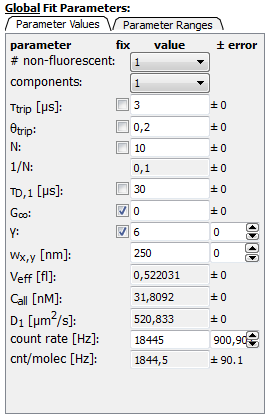

$$qf_commondoc_header.start$$ $$qf_commondoc_header.end$$
This tutorial will explain how to do proper FCS data fitting using QuickFit. We assume that the reader has basic knowledge about Fluorescence Correlation Spectroscopy and the data evaluation methods used in it. This tutorial is split up into several steps that you should follow to evaluate a complete FCS measurement, starting from the calibration of the focal volume with a known dye and followed by the actual fitting of measured FCS correlation curves.
Experiment Description
For this tutorial, we assume that the user want's to estimate the percentage of two species in a mixture using FCS. Test data is provided for this experiment (in the directory $$local_plugin_assets$$):
- al488_20nM.ASC contains ACFs taken from a 20nM solution of Alexa-488
- DNA_2nM_Al488.ASC contains ACFs taken from a 2nM solution of Alexa-488-labeled DNA
- DNA_2nM_Al488_10ul.ASC contains ACFs taken from a 2nM solution of Alexa-488-labeled DNA + 10μl of an Alexa-488 solution
We will use the first measurement to calibrate the focal volume and then read information from the others.
Loading FCS data
First we need to load the FCS curves to do so, we rely on the plugin 'FCS' which is by default part of QuickFit. First you create an empty project and in the main window click on Data Items/Insert Raw Data/Open FCS Data from File. Now you may browse to the directory $$local_plugin_assets$$ and select the three files mentioned above. This will load the measured data from these files and insert them into the project. You will find these files in the project tree folder Raw Data. By double-clicking any of these raw data records you may open a view on the data contained in the file.
Exploring and Cleaning up the Data
Now we may look at the data and explore some basic properties. Also it is possible to clean up the loaded data,by excluding measurements that did not work. First, we double-click the file al488_20nM.ASC and a view on the data in the file pops up in a new window. The first tab of this window lists basic properties of the file in the project and allows to add a description or change the name by which the data file is reference throughout QuickFit. For example, we could note that this was a calibration measurement in the field description, so we remember, when looking at the data again some years later.
In the second tab we may explore the ACFs saved in the file. It should look similar to this:
 In the plot you see all the single runs in the file (black, and the highlighted/selected runs in red). The blue curve shows the average (and standard deviation) over all these runs. Below the plot you can choose whether to cut some data points (for very small or very large lags) from the display. This often helps to better judge the results, as this way you can easily get rid of large peaks that often occur towards the smallest lag times, due to detector afterpulsing (as see here). By selecting runs in the list on the right-hand side, you may explore all the runs separately.
In the plot you see all the single runs in the file (black, and the highlighted/selected runs in red). The blue curve shows the average (and standard deviation) over all these runs. Below the plot you can choose whether to cut some data points (for very small or very large lags) from the display. This often helps to better judge the results, as this way you can easily get rid of large peaks that often occur towards the smallest lag times, due to detector afterpulsing (as see here). By selecting runs in the list on the right-hand side, you may explore all the runs separately.
Especially for in measurements in cells, often some runs show artefacts dure to the movement of the cell. Other reasons for artifacts could be agregates moving through the focus. In order to eliminate such unusable runs from the average (which is often evaluated), you may select these and then click on exclude selected which will mark them as excluded. The average is immediately updated.
Note: The exclusion of runs is saved in the QuickFit project only. The raw data is never altered by QuickFit!
As all runs seem to be OK, we do not have to exclude any runs here and can proceed to data fitting. In order to do so, we now close the raw data window.
FCS Fitting
FCS Curve Fit User Interface
- After cleaning up the data, by excluding invalid runs and artifacts, we can now proceed to data fitting. In order to do so, we first have to add an evaluation object for FCS Fitting to the project. This can be done by clicking Data Items/Insert Evaluations/FCS Curve Fitting in QuickFit's main window. This tutorial describes FCS curve fitting only. For a description of other FCS data evaluation techniques that may be available, see the respective plugin tutorials.
- Now a new entry under Evaluations has appeared. If you want to compare different fitting models, you can add mor FCS Curve Fitting objects, as described above. They will be completely independent. We can open the user interface of the fit window, by double-clicking the object in the project tree. You will see a screen like this after selecting the tab Evaluation (A detailed description of this screen is given in the "FCS Fit: User Interface".):

- The dialog currently displays the average run from the first file (al488_20nM.ASC). If a different file or run is displayed, please change this in the file-list at the rhs of the dialog and the run-selection spin box above the fit paramaters.
- We first note a string peak of the correlation curve for the first few lag time channels. This usually stems from detector afterpulsing and the usual FCS fit models do not account for it. So we cut the first 4-5 channels from the data by setting the lower cut-off to 5. You can also set the upper cut-off to e.g. 120, which will cutsome of the channels where the ACF already decayed to zero and which do not contribute much to the fit.
- Now we select the fit algorithm "levmar" and the Fit model "FCS: Normal Diffusion 3D". With these settings, we will fit a function of the form
 to the data, which describes normal diffusion in three dimension with a triplet component. The weight model will be set to "Standard Deviation", which means that the standard deviations, calculated when averaging over the runs in the file will be used as an error estimate on each point of the ACF.
to the data, which describes normal diffusion in three dimension with a triplet component. The weight model will be set to "Standard Deviation", which means that the standard deviations, calculated when averaging over the runs in the file will be used as an error estimate on each point of the ACF.
- Now we set up the global/initial parameters. We first fix (checkboxes on the left side of the paramaters) G∞ and set ist value to 0 and also γ to a value of 6, which was determined separately for the microscope with which we took the measurement. The fit parameters should now look like this:

The fit paramaters like wx,y, Veff, ... may not be used as fit paramaters (they do not appear in the fit function, as written down above), but are automatically calculated from the fit results. After the fit they will be updated to new values based on the fit values. For now we will ingore them. We already set the fit values to reasonable guesses and the the correlation plot should look like this:

- Now we perform the fit, by clicking
 Fit Current below the fit paramaters. The fit will be performed and the fit paramaters, the correlation plot and the fit statistics are now:
Fit Current below the fit paramaters. The fit will be performed and the fit paramaters, the correlation plot and the fit statistics are now:
 If the fit did not succeed (see message in the fit statistics box below the correlation plot), you may change the fit paramaters and fit again, or try a different model or algorithm. For cases where the algorithms do not converge nicely to a good fit, you may want to try the algorithm "Simulated Annealing", which is a stochastic optimizer that usually converges nicely, but is a lot slower than the Levenberg Marquardt variants.
If the fit did not succeed (see message in the fit statistics box below the correlation plot), you may change the fit paramaters and fit again, or try a different model or algorithm. For cases where the algorithms do not converge nicely to a good fit, you may want to try the algorithm "Simulated Annealing", which is a stochastic optimizer that usually converges nicely, but is a lot slower than the Levenberg Marquardt variants.
- Now you can do the same fit for the other files too. You will notice though that the fits do not converge nicely, as the solution consisted of two different components with different diffusion coefficients. In order to overcome this problem you can choose two diffusin components for both files. Then the fits should converge nicely. Here is an example for thethird example file with one component:
 and with two components:
and with two components:
 As you can see (contrary to the 1-component fit) the residuals nicely scatter around 0 and do not show strong correlations. We can now use the fit results to read the diffusion time τD,2 of the slow (DNA) component and the fast (free Alexa-488) component. In order to get real diffusion coefficient from the we will have to perform a calibration of the focal volume, which is described below.
As you can see (contrary to the 1-component fit) the residuals nicely scatter around 0 and do not show strong correlations. We can now use the fit results to read the diffusion time τD,2 of the slow (DNA) component and the fast (free Alexa-488) component. In order to get real diffusion coefficient from the we will have to perform a calibration of the focal volume, which is described below.
Fit results strongly depend on the number of fit parameters. If there are too many paramaters, the FCS evaluatio is prone to overfitting. In those cases usually the fit results will "wander" around when fitting several times. Also it may be hard for the FCS fit models to distinguish different components when their correlation times are near to each other (say less than a factor of 10). In those cases it may be a good idea to include as many pre-knowledge as possible. E.g. you could fix the diffusion time of one component to that of the free dye, as measured in a separate experiment. Also it is often a good idea to fis the triplet relaxaion time to a usual value for the respective dye.
Calibration of the Focal Volume
In the last section we showed how to perform FCS curve fits. We did however not calibrate the focal volume so far. As confocal FCS does NOT have an intrinsic ruler other than this volume, which depends on the type of sample chamber, day-to-day abberations, temperature, thicknes of cover glass, alignment of the instrument, ..., we will have to calibrate it. This is usually done by measuring a clean dye solution (usually 5-20 nM) with a well established diffusion coefficient (see the table and references in "FCS Fit: Estime focus parameter wxy from fit results"). In above's example we can take the first measurement which was done for a 20nM Alexa-488 solution at 20°C. Therefore the diffusion coefficient should be 435μ2/s.
For the example here, we assume that γ=6 is a good setting (which can be established by a separate determination of the focal volume, by scanning a fluorescent bead through the fcous and which will not change that much with changes of the setup) and are left with the problem of determining wx,y. If you do not have an independent value for γ, you can leave it also as a free paramater in the calibration measurement and take the fitted values for the rest of the evaluation.
Now you will have to take the τD = (30 ± 2) μs value from the fit above and plug it into the next equation together with the given diffusion coefficient:
You can either do this by hand, or use the tool "Focal Volume" (button below the fit paramaters). This tool allows you to set a diffusion coefficient (with errors, if known) and then performs this evaluation. It also calculates the correct error for this.
After performing this calibration, the new value wx,y = (230 ± 7) μm will be written back to the local fit paramaters of the current file/run. In order to use it for all fits in the current evaluation object, right-click in the paramater field for wx,y and select "Copy Value & Fix to all Files". This will also copy the value to the initial paramaters. From now on all fits use this value for the vocal volume to determine diffusion coefficients and concentrations (fit paramaters towards the end of the list). For thecalibration measurement we will now have D = 435μm2/s and e.g. for the DNA we get a value of D=13μm2/s.